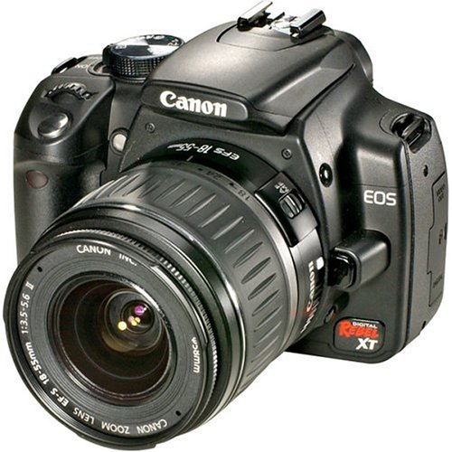
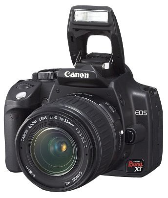
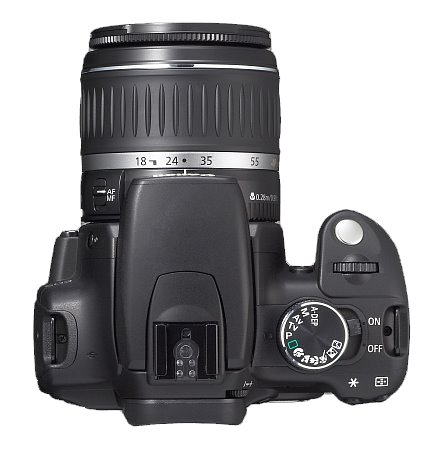

Camera
Canon Digital Rebel XT DSLR Camera with EF-S 18-55mm f3.5-5.6 Lens (Black) (OLD MODEL)
- 
- 
Features
- 8.0-megapixel CMOS sensor captures enough detail for photo-quality 16 x 22-inch prints
- Includes Canon's EF-S 18-55mm, f3.5-5.6 zoom lens
- DIGIC II Image Processor provides fast, accurate image processing; captures images at a rate of up to 3 frames per second
- Fast start-up time--.2 seconds
- Powered by rechargeable Lithium-ion battery (included, with charger)
The best thing I've ever bought!
The XT is amazing. The battery comes partly charged so you can immedietly start using the camera (thank you Canon!) I've already shot about 200 pictures with it and the battery hasn't died yet.
Product Description
The Canon EOS Digital Rebel camera now has a new, faster, even smaller big brother. Sibling rivalries aside, the 8.0-megapixel Canon EOS Digital Rebel XT SLR adds resolution, speed, extra creative control, and enhanced comfort in the hand to one of the smallest and lightest digital cameras in its class. Even with its advancements in ergonomic design and technology, this easy-to-use EOS digital camera is compatible with all of Canon's EF lenses, including the EF-S lenses.
Autofocus Made Easy Utilizing the same 7-point autofocus system as the EOS Digital Rebel camera, the new EOS Digital Rebel XT SLR is capable of analyzing where a subject is--even when it is off center--and almost immediately bringing it into focus. It can also analyze subject movement and automatically select locking or tracking AF modes as needed. These features simplify the camera's operation and optimize its performance. The Digital Rebel XT allows users to select locking or tacking AF modes independently, adding a new dimension of creative control.
Reviews
Tú
Katherine Bermudez
Another stunning winner from the bright minds at Canon
I spent three hours yesterday playing with the brand-new Canon Digital Rebel XT digital SLR camera, and man, was I impressed.
Tatiana Bonilla
Cheap way to buy a good camera.
In summary, the Canon Digital Rebel XT is another stunning winner from Canon. It features faster speeds (start-up and shot-to-shot), excellent image quality, and terrific look-and-feel. Despite my personal preference for Nikon pro-level gear, I can recommend this Canon d-SLR to my friends without reservation.